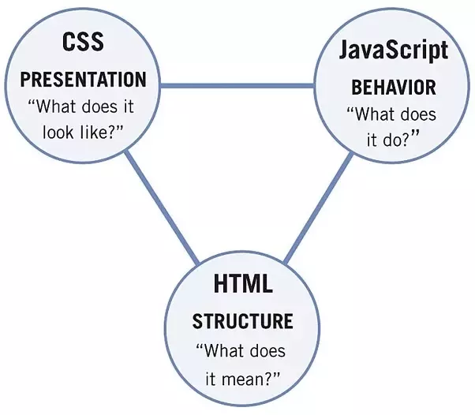
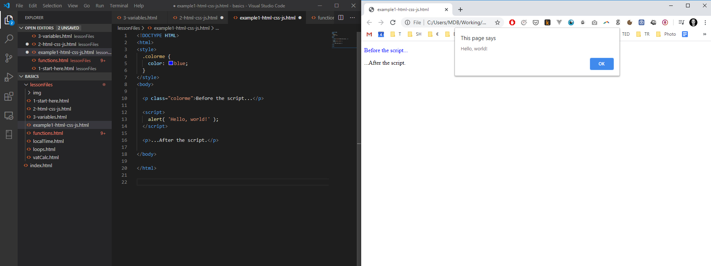

Before we start to create our first programs we have to choose which programming language we gonna use.
Due to it's simplicity we will start our progrmaming journey with JavaScript (do NOT confuse with Java!).
JavaScript is currently number 1 according to Google Trends (most trending programming language) but it isn't new. It also achieved title of most popular programming language in Stack Overflow (IT Geeks Portal) Developer Surver 2019 and is also most popular programming language on GitHub (a biggest database of programms)
But the biggest advantage and reason why we will use JavaScirpt in our tutorial is fact that you just need a web browser to use it.
Before we start, we have to explain one important case. Although, JavaScript can be used standalone, it's very often used along with HTML and CSS.
HTML, CSS and JS (JavaScript) are used to create web sites, therefore we have to understand how they are combined.
We not gonna focus on that in this tutorial (I covered in next HTML/CSS/JS tutorial available here TODO ). For now we just have to understand that we will use JavaScript inside HTML files.
Let's open example1-html-css-js.html file both in the browser and Visual Studio Code:
Most of the websites consist of HTML tags like:
<html>
<body>
<p class="colorme">Before the script...</p>
<p>...After the script.</p>
</body>
</html>
CSS styles:
<style>
.colorme {
color: blue;
}
</style>
And JavaScript code:
<script>
alert( 'Hello, world!' );
</script>
In this tutorial we will focus and use only the last JavaScript part.
<script>
alert("I'm alive ")
console.log("And my console works fine too")
</script>
This construction will run our JS code every time we open our index.html file in the browser.
Let's open index.html file in both: Visual Studio Code and browser.
The last thing which we have learn before starting our tutorial is to open a console.
Next lesson